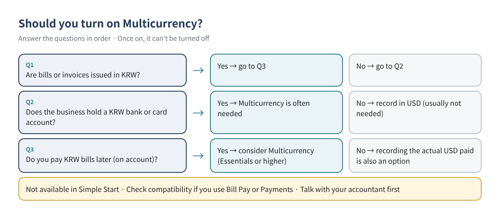
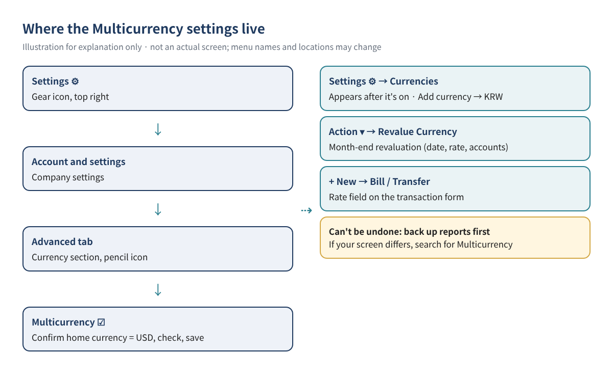
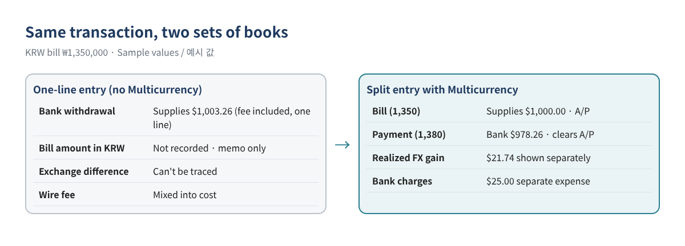
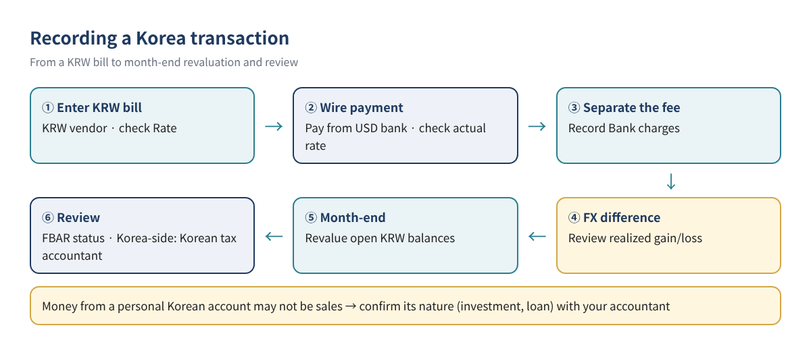

Paying Korean Vendors in Won but Booking Only Dollars? Multicurrency Setup and Exchange Differences in QuickBooks Online
Many small businesses buy packaging, ingredients or design work from suppliers in Korea, receive bills in Korean won (KRW), and pay by wire from a US bank account. If you only record the dollar amount that left the bank, the bill (in won) and your books (in dollars) drift apart. When the exchange rate on the bill date differs from the rate on the payment date, the difference is hard to explain, and wire fees often end up buried in the cost of goods.
This guide covers how to decide whether to turn on Multicurrency in QuickBooks Online (QBO), how to turn it on, how to set up KRW vendors and enter KRW bills, how exchange differences (foreign exchange gains and losses) arise, and how month-end revaluation works. It expands on a topic introduced briefly in the series start post, QuickBooks Online Basics for Beginners.
This article is general educational information, not tax, legal or financial advice.
Who this is for ☐ Owners who pay suppliers in Korea in won ☐ Anyone who has been converting won bills to dollars by hand ☐ Bookkeepers unsure where wire fees and exchange differences belong ☐ Owners worried that money moved from a personal Korean account into the US business account was booked as sales
1. First decide: do you really need Multicurrency?
Multicurrency cannot be turned off once it is on. According to Intuit, after you turn it on you cannot turn it off or change your home currency. So the first step is to confirm that you actually need to keep foreign-currency amounts in your books, not just that the feature looks convenient.
| Situation (example) | Need for Multicurrency | Typical way to record |
|---|---|---|
| Korean vendor bills in USD; you wire USD from a US account | Usually not needed | Record a USD bill or expense |
| Korean vendor bills in KRW; you pay later (on account) | Worth considering | KRW vendor + KRW bill → enter rate when paying |
| The business holds a KRW bank or card account | Often needed | Set up a separate KRW bank account in QBO |
| You invoice a Korean customer in KRW | Worth considering | KRW customer + KRW invoice |
| A one-time small wire and the bill is in USD | Usually not needed | Record the bank amount; record the fee separately |

Check your plan Per Intuit's US help, Multicurrency is available in QBO Essentials, Plus and Advanced and is not available in Simple Start. The same article says QuickBooks Bill Pay and QuickBooks Payments are not compatible with Multicurrency, so if you use either, check current guidance before turning it on. Intuit also says Multicurrency won't work if QuickBooks Commerce is connected, and turning it on inactivates the cash flow planner.
2. How to turn on Multicurrency
Menu names and locations change often. Steps 2–5 below follow Intuit's US help article (step 1 is our own recommendation). If your screen looks different, type "Multicurrency" or "Currency" in the search bar.
- (Our recommendation, not an Intuit step) Before you start, save a Balance Sheet and a Profit and Loss report as PDFs for your records.
- Go to Settings ⚙ → Account and settings → the Advanced tab.
- In the Currency section, select the pencil (edit) icon and confirm the Home currency is United States Dollar. The home currency can only be changed before Multicurrency is turned on.
- Select the Multicurrency checkbox, confirm that you understand it can't be undone, and save.
- Go to Settings ⚙ → Currencies (it appears after Multicurrency is on), select Add currency, and add South Korean Won.

3. Set up KRW vendors and accounts
With Multicurrency, each vendor, customer, bank account and credit card account is assigned a single currency. Intuit says that once an account has a transaction posted to it, you can no longer change its currency, and to change a vendor's currency you make the existing vendor inactive and create a new one with the new currency. Income and expense accounts always use your home currency (USD).
| Item | Sample values / 예시 값 | Note |
|---|---|---|
| KRW vendor | Seoul Pack Supply (KRW) – fictional company | Adding the currency to the name keeps it clear |
| Same company, USD vendor | Seoul Pack Supply (USD) | Different currency = separate vendor |
| KRW bank account (if you have one) | KR Bank – KRW Operating | Only if a real KRW account exists |
| Expense accounts | Supplies, Bank charges | Tracked in USD (no KRW version needed) |
To bring in vendor lists from a spreadsheet, see Import Customers, Vendors and Products. For vendors with a currency assigned, check how the import screen handles the currency column before you import.
4. Entering and paying a KRW bill: the rate shows up twice
On a bill you pay later, the exchange rate is used twice. The rate on the bill date sets the dollar expense, and the rate on the payment date sets how many dollars leave the bank. The difference between the two is a realized foreign exchange gain or loss.
- Select + Create (or + New), choose Bill as the transaction, choose the KRW vendor, and enter the bill amount in won.
- Check the Rate (exchange rate) field. According to Intuit, you can use the exchange rates QBO provides (from IHS Markit) or your own, and you can type a rate directly on a transaction. Use one consistent company policy.
- When you record the payment after the wire, choose your USD bank account and confirm that the rate and dollar amount match your bank's wire confirmation. Payment screens change, so follow the current layout.
- Record the wire fee the bank charged as a separate expense such as Bank charges, not as part of the bill.
- After payment, confirm the bill shows Paid, the bank balance matches the statement, and where the exchange difference appears on the Profit and Loss.
Worked example (Sample values / 예시 값)
Maru Kitchen, a fictional Korean restaurant in Las Vegas, buys food containers on account from Seoul Pack Supply for ₩1,350,000.
| Step | KRW | Rate (KRW per USD, sample) | USD |
|---|---|---|---|
| Bill date | ₩1,350,000 | 1,350 | $1,000.00 |
| Payment date | ₩1,350,000 | 1,380 | $978.26 |
| Difference (realized FX gain) | – | – | $21.74 |
| Bank wire fee (separate expense) | – | – | $25.00 |
The total that left the bank, the $978.26 wire plus the $25.00 fee, was $1,003.26. Because the won weakened, paying the same ₩1,350,000 took fewer dollars, so the $21.74 is a gain. If the rate on the payment date had been 1,320 (a stronger won), it would have taken more dollars and produced a loss. Without Multicurrency, booking only the $978.26 withdrawal leaves the $1,000 bill unexplained, and if the $25 fee is mixed in, your cost of goods looks different from reality.

5. Month-end revaluation for open KRW balances
If you still owe a KRW bill or hold a KRW balance at month end, reports show dollar values at the rates used when each transaction was entered. According to Intuit, a home currency adjustment recalculates those balances at a new rate, and it is available in Essentials, Plus and Advanced.
- Go to Settings ⚙ → Currencies, open the small arrow (Action) on the South Korean Won row, and select Revalue Currency.
- Choose a date (usually month end) and a rate (the market rate or one you enter).
- Select the accounts to revalue and select Revalue.
- Per Intuit's FAQ, changes on accounts receivable and accounts payable show as unrealized gains or losses, while changes on bank and credit card accounts show as realized. On the journal entry a revaluation creates, you can change only the entry number and memo; to change the date, amounts or rate, delete it and run the revaluation again.
Tip You can't revalue a period that is closed with Close the books. Revalue right before you run reports and before closing the month. Agree with your accountant in advance whether you revalue and which rate you use. For closing-date basics, see Fix Mistakes in QBO: Void, Delete, Undo.
6. Korea ↔ US transfers and tax items to confirm
If an owner sends money from a personal Korean account to the US business account, don't classify the deposit as sales just because it appears in the bank feed; check what it is first. Such money is generally recorded according to its nature, for example as an owner's investment or a loan from the owner, and which one applies depends on the facts, so confirm with your accountant. See Owner Draws and Business Expenses Paid Personally for the general approach. If the business holds a KRW account and moves money to or from a USD account, use + New → Transfer and enter the from and to accounts, the amount and the exchange rate.
| Item to confirm | What official guidance says | Source |
|---|---|---|
| Reporting currency | Amounts on a US tax return must be expressed in US dollars | IRS |
| IRS official rate | The IRS has no official exchange rate; it generally accepts any posted rate used consistently | IRS |
| Which rate | Generally the rate prevailing when you receive, pay or accrue the item (spot rate) | IRS |
| FBAR (FinCEN Form 114) | US persons (including citizens, residents, corporations, partnerships, LLCs, trusts and estates) with a financial interest in or signature authority over foreign financial accounts whose aggregate value exceeded $10,000 at any time during the year | IRS |
| FBAR deadline | April 15 of the following year, with an automatic extension to October 15; filed electronically through BSA E-Filing, separate from the tax return | IRS |
Check Korea-side obligations too If you are a Korean resident or if Korean accounts or transfers to or from Korea are involved, reporting obligations may also apply in Korea, separate from the US. This article does not cover Korean rules or amounts; confirm with a Korean tax accountant (세무사).
For nonresidents who own a US LLC, see US LLC for Korean Nonresidents.

7. Common mistakes
- Turning it on "just to try": Multicurrency can't be turned off. If you want to test, use a separate trial company first.
- Mixing two currencies on one vendor: one vendor carries one currency. Create a separate vendor for each currency.
- Folding wire fees into the bill: the fee isn't paid to the vendor, so record it as a separate expense.
- Booking personal transfers as sales: confirm what money from a personal Korean account is before categorizing it.
- Trying to revalue after closing: closed periods can't be revalued.
8. FAQ
Q. I'm on Simple Start. Can I record KRW bills?
According to Intuit, Multicurrency isn't available in Simple Start. In that case businesses generally record the actual dollar amount wired and keep the won amount of the bill in the memo or as an attachment.
Q. Which exchange rate should I use?
The IRS says it has no official exchange rate and generally accepts any posted rate used consistently. Decide whether you will use QBO's rates or the rate on your bank's confirmation, and apply the same policy every time.
Q. I turned on Multicurrency by mistake. Can I undo it?
Per Intuit, once Multicurrency is on you can't turn it off or change the home currency. Work out with your accountant how to organize vendor and account currencies under the current setup.
Q. How are exchange gains and losses taxed?
The tax treatment depends on the type of transaction and the business entity. Keep the amounts clearly separated in your books and confirm the treatment with a CPA, EA or other licensed professional.
Q. My Korean account balance is small. Does FBAR still matter?
The IRS test looks at whether the aggregate value of foreign financial accounts exceeded $10,000 at any time during the year. With several accounts, the total counts, so confirm your situation with a professional.
9. Self-check checklist
- ☐ Confirmed you actually have KRW bills, KRW accounts or KRW invoices
- ☐ Confirmed your plan is Essentials or higher and whether you use Bill Pay or Payments
- ☐ Saved a Balance Sheet and Profit and Loss before turning it on
- ☐ Confirmed the home currency is USD
- ☐ Added (KRW)/(USD) to vendor names by currency
- ☐ Recorded wire fees as a separate expense
- ☐ Agreed with your accountant on month-end revaluation
- ☐ Confirmed foreign account totals and FBAR status with a professional
- ☐ Confirmed Korea-side obligations with a Korean tax accountant
10. Related reading
- QuickBooks Online Basics: 10 Things to Know When You Start
- Bills and Accounts Payable in QBO
- QBO Bank Feeds: Match, Add and Rules
- Owner's Draw and Business Expenses Paid Personally
- Invoices to Payments: Partial Payments, Discounts, Refunds and Credits
- US LLC for Korean Nonresidents
This article is general educational information, not tax, legal or financial advice. Exchange rates, reporting thresholds and deadlines can change. Confirm how the rules apply to your business with a CPA, EA, attorney or other licensed professional, and confirm Korea-side obligations with a Korean tax accountant. QBO screens, menu names and plan features change often, so check current screens and official guidance from Intuit and the IRS.
QuickBooks is a registered trademark of Intuit Inc.; not affiliated with or endorsed by Intuit.
Sources
- Intuit QuickBooks Help: Set up and use Multicurrency in QuickBooks Online — 확인일 2026-11-23
- Intuit QuickBooks Help: Set up and use Multicurrency in QuickBooks Online (US article) — 확인일 2026-11-23
- Intuit QuickBooks Help: Enter and use own exchange rates in QuickBooks — 확인일 2026-11-23
- Intuit QuickBooks Help: Enter home currency adjustments for your foreign balances — 확인일 2026-11-23
- Intuit QuickBooks Help: Frequently asked questions about home currency adjustments — 확인일 2026-11-23
- IRS: Report of Foreign Bank and Financial Accounts (FBAR) — 확인일 2026-11-23
- IRS: Yearly average currency exchange rates — 확인일 2026-11-23
- IRS: Foreign currency and currency exchange rates — 확인일 2026-11-23